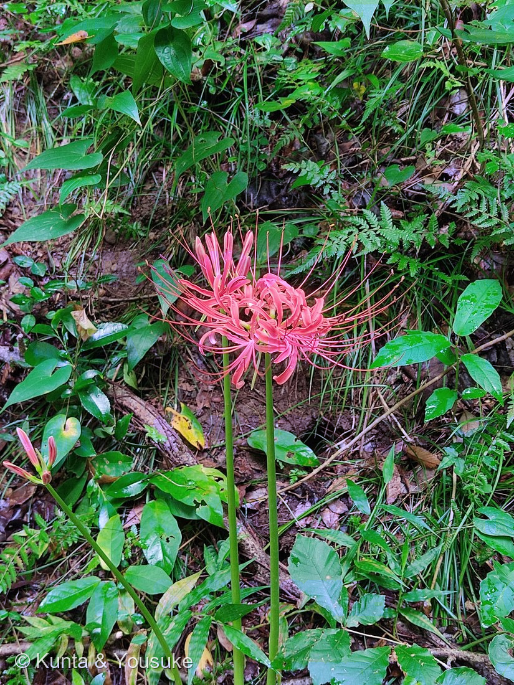
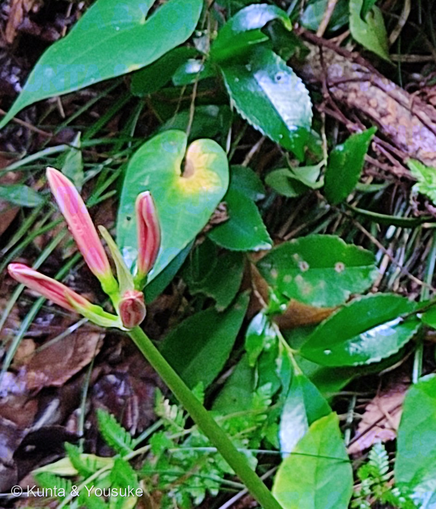

地図を読み込んでいるよ…
🔍 写真も地図も、押しているあいだ拡大して見られるよ（スマホは指を置いてすこし待ってね）。
🌍 の地図＝この子がもともと自生している場所を緑に。中国。⚠日本への渡来時期は出典で食い違う（Wikipedia＝中国大陸から有史以前に渡来したと考えられており／三河の植物観察＝室町時代〜安土桃山時代と推定）。運ばれ方も、稲作の伝来時に土とともに鱗茎が混入したという説と、モグラやネズミを避けるために有毒な鱗茎をあえて持ち込んだという説がある。
⭐中国原産だよ。⚠日本への渡来時期は出典で食い違っている——「中国大陸から有史以前に渡来したと考えられており」とするものと、「室町時代〜安土桃山時代と推定」とするもの。⭐どちらにしても、自分では海を渡れない。この子は三倍体で種ができないから、球根を人が運ばないかぎり、一歩も動けないんだ。⚠日本のものは野生ではなく、人の手で広がったものだから、日本は塗っていないよ。
⚠ 地図は国（日本と中国だけ県・省）までしか塗れないから、ほんとうの分布より広く見えていることがあるよ。地図はだいたいの場所。正確なところは、上の文を見てね。
ヒガンバナ（彼岸花）
Lycoris radiata (L'Hér.) Herb.
別名 · 曼珠沙華（まんじゅしゃげ）／葉見ず花見ず／しびとばな ほか ⭐数百から1000種以上あるといわれる／ 原産 · 中国／ 見どころ · ⭐⭐日本のヒガンバナは、ぜんぶ遺伝的に同じクローン
ヒガンバナ科 · Amaryllidaceae（ヒガンバナ属 Lycoris・キジカクシ目 Asparagales）── 084 キツネノカミソリと同属、169 ハマユウと同じ科
燻太さんの言葉「次はヒガンバナだよ。赤い方は、大学校内の株。咲く前のつぼみも、宝石みたいで綺麗だよね。」……⭐ほんとうに宝石だった。しかもその色は、開いたら消えてしまう。
名前と学名の由来 ── 名前を千も持てる草
- 属名 Lycoris（リコリス）＝ギリシャ神話の女神で、海の精・ネレイドの1人である「リュコーリアス（Lycorias）」から。種小名 radiata（ラディアタ）＝「放射状」の意味で、「花が完全に開いた時に放射状に大きく広がっている様子」にちなむ。──⭐写真①の、線香花火みたいに開いた形そのままの名前だね。
- 和名「彼岸花」＝「秋の彼岸頃、突然に花茎を伸ばして鮮やかな紅色の花を咲かせること」から。
- 「曼珠沙華（まんじゅしゃげ）」＝サンスクリット語の manjusaka に由来し、「赤い花」「葉に先立って赤花を咲かせる」という意味。『法華経』に出てくる天上の花なんだ。
- ⭐⭐そして、この草は名前をたくさん持っている。「別名・地方名・方言は数百から1000種以上あるといわれている」。──⭐この図鑑でいちばん名前の多い子だと思う。それだけ、日本のあちこちで、人の暮らしのそばにいたということ。
この植物のこと ── 葉と花が、いちども出会わない
- ⭐花が咲くとき、葉は一枚もない。写真①を見て——緑の茎が2本、地面からいきなり立っているだけ。⭐別名「葉見ず花見ず」は、そこから来ている。
- 葉は花の終わった後の10月に出て、翌春に枯れる。──だから葉と花は、一生すれちがったまま。
- ⭐同属の084 キツネノカミソリも、同じ「葉見ず花見ず」。あちらは夏、こちらは秋の彼岸。同じ属で、同じ暮らし方をしている。
- 花期は8〜9月。花被は外花被片3・内花被片3の計6枚で、明るい赤色（朱赤色）。⭐裂片は強く反り返り、縁は強く波打つ。雄しべは6個で、はっきり突き出る。──写真①で長い弧を描いてはね上がっているのが雄しべだよ。
- 総苞は2個、披針形で長さ約3.5cm×幅0.5cm。⭐写真②の、つぼみのつけ根を包んでいる薄い皮がそれ。
同定について
- 決め手はぜんぶ写真①にある：花被片が強く反り返って縁が波打つ／狭い倒披針形／雄しべ6本が花被よりずっと長く突き出る／朱赤色／葉がまったくない／9月中旬。
- ⚠似た子との区別：084 キツネノカミソリ（同属）＝雄しべが突き出ない・花被も反り返らない、夏に咲く。⭐並べればすぐ分かる。／ナツズイセン（同属）＝花が漏斗状でこんなに裂けず、色は淡いピンク。
- ⭐色のこと、正直に書いておく。ぼくは最初、写真の色が「深紅ではなくサーモンがかっている」のが気になった。──でも出典を読んだら、ヒガンバナの花被は「明るい赤色（朱赤色）」と書いてあった。⭐引っかかりのほうが間違っていた。⚠「思ったより赤くない」で疑う前に、まず出典の色の書きぶりを見ること。
⭐⭐⭐ 日本のヒガンバナは、ぜんぶ同じ一株の分身
- ⭐⭐この草は、種ができない。──「染色体が基本数の3倍（3n = 33）であり、正常な卵細胞や精細胞が作られないため、一般に種子では子孫を残せない不稔性」。⭐三倍体なんだ。
- ⭐⭐⭐そして、もっとすごいこと。「日本列島のヒガンバナは遺伝的に同一のクローンであり、同じ地域の個体は開花期や花の大きさ、色、草丈がほぼ同じように揃う」。
- → つまり、日本じゅうの畦や土手に並ぶヒガンバナは、球根が分かれて分かれて増えた、たった一つの株の分身。⭐あの「みんな同じ日に、同じ高さで、いっせいに咲く」のは、ぜんぶ同じ体だから。
- ⭐この図鑑には、もうひとり「種ができないクローン」がいる＝053 シャガ。──⭐でも、ふえ方の意味がちがう。シャガは人がいなくても地下茎でひろがれる。ヒガンバナは、球根を人が掘って運ばないと、遠くへは行けない。⭐⭐だから日本のヒガンバナの分布は、そのまま「人がどこに住んで、どこを耕したか」の地図でもあるんだ。
- ⚠燻太さんへ：日本産はほとんどが三倍体の var. radiata で不稔だけれど、出典には「2n = 22(2倍体), 32, 33(3倍体)」とある。⭐種ができる二倍体が、どこかにはいる。
⭐ どうして畦と墓地にいるのか ── 毒と、飢えと
- 鱗茎に有毒なアルカロイド（リコリン）を含む。⚠食べてはいけないよ。
- ⭐畦や墓地に多いのは、偶然じゃない：「水田に穴を作る害獣を鱗茎の毒によって遠ざけるため」「土葬された遺体が動物に荒らされるのを防ぐため」。──人が、毒を理由に植えた。
- ⭐⭐そして、その同じ毒を抜いて、飢饉のときには食べた。「リコリンは水溶性であり、すり潰して水に長時間晒せば無毒化が可能」。三河の植物観察にも「昔、飢饉のときに毒を抜いて食べた」とある。
- → ⚠⭐毒だから植えて、飢えたら毒を抜いて食べた。──同じ性質を、二通りに使ったんだね。
⭐⭐ つぼみのこと ── 燻太さんが「宝石みたい」と言った
- ⭐燻太さんの言葉：「咲く前のつぼみも、宝石みたいで綺麗だよね。」──ほんとうに、そのとおりだった。
- 写真②を見て。⭐開きかけの細長いつぼみは、桃色の地にクリーム色のふちどりが入っていて、まるで漆をかけたよう。そして⭐まん中に、まだ球のままの若いつぼみがひとつ。これから開く順番が、そのまま見えている。
- ⭐この色は、開くと消える。開いた花（写真①）は一様な朱赤色で、つぼみのときのクリーム色のふちは、もう無い。──⚠つまり、つぼみを見なかった人は、この色を一生知らない。⭐燻太さんが足を止めたから、この図鑑に残った。
- ⭐⭐そしてこの「つぼみの桃色」は、174 シロバナマンジュシャゲで、もういちど出てくるよ。
参考：三河の植物観察「ヒガンバナ」（Lycoris radiata (L'Her.) Herb.／ヒガンバナ科ヒガンバナ属／2n = 22(2倍体), 32, 33(3倍体)、日本のものはほとんどが3倍体の var. radiata であり不稔／中国原産、日本への渡来は室町時代〜安土桃山時代と推定され、文明16年(1484年)温故知新書に「曼殊沙華」、寛文6年(1666年)訓蒙図譜には「しびとばな」名で記載／花被（外花被片3、内花被片3）は明るい赤色（朱赤色）／花被の裂片は強く反り返り狭い倒披針形、縁は強く波打つ／雄しべは6個、はっきり突き出る／花期は8〜9月／葉は花の終わった後の10月に出て翌春に枯れる／鱗茎に有毒なアルカロイドを含むが、昔、飢饉のときに毒を抜いて食べたという／総苞は2個、披針形、約長さ3.5cm×幅0.5cm）／Wikipedia「ヒガンバナ」（属名 Lycoris はギリシャ神話の女神で海の精・ネレイドの1人であるリュコーリアスから／種小名 radiata は「放射状」の意味で、花が完全に開いた時に放射状に大きく広がっている様子にちなむ／和名は秋の彼岸頃、突然に花茎を伸ばして鮮やかな紅色の花を咲かせることに由来／曼珠沙華はサンスクリット語 manjusaka に由来し「赤い花」「葉に先立って赤花を咲かせる」の意味／別名・地方名・方言は数百から1000種以上あるといわれている／染色体が基本数の3倍（3n = 33）であり、正常な卵細胞や精細胞が作られないため、一般に種子では子孫を残せない不稔性／日本列島のヒガンバナは遺伝的に同一のクローンであり、同じ地域の個体は開花期や花の大きさ、色、草丈がほぼ同じように揃う／中国大陸から有史以前に渡来したと考えられており、稲作の伝来時に土と共に鱗茎が混入、あるいはモグラやネズミを避けるために有毒な鱗茎をあえて持ち込み／水田に穴を作る害獣を鱗茎の毒によって遠ざけるため、土葬された遺体が動物に荒らされるのを防ぐため／リコリンは水溶性であり、すり潰して水に長時間晒せば無毒化が可能／花期は秋の彼岸頃（9月中旬））